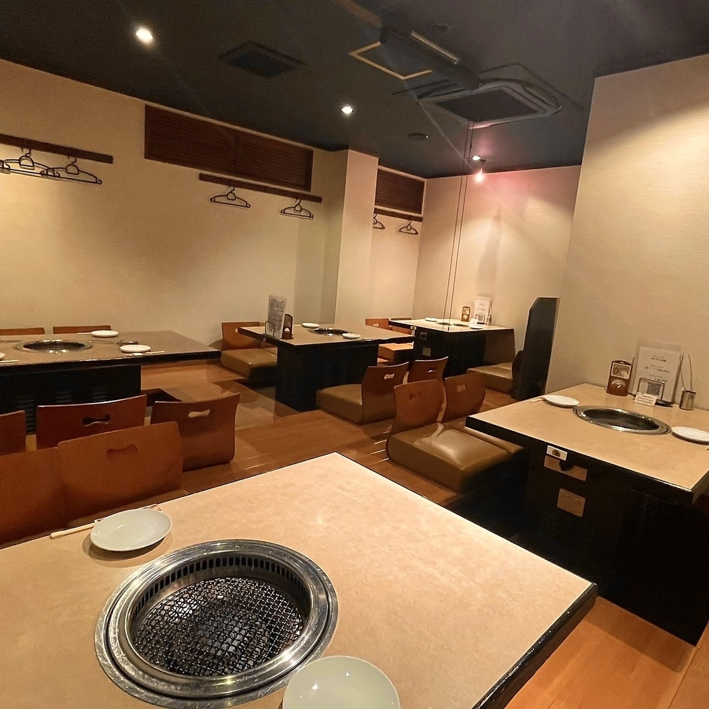

お料理のみ / 全14品
肉旅贅沢コース
9,350円
さまざまな部位を味わう、学一の贅沢な肉旅。大切なお食事のひとときに。
GAKUICHI / TSUDANUMA
いつもの街で、
とっておきの焼肉を。
津田沼駅の北口から徒歩1分。待ち合わせにも便利な場所で、おいしい肉と冷麺を囲むひとときを。
津田沼店を予約する津田沼駅 北口徒歩1分

お品書き
黒毛和牛の雌牛と、手づくりの冷麺。
学一の味を、アラカルトで。

OUR SIGNATURE
1,375円（税込）
麺からスープまで丹念に仕立てる、学一の看板料理。焼肉とともに味わう、本場盛岡の一杯です。
コース
お食事をゆっくり楽しむ日も、
お祝いの日も。

お料理のみ / 全14品
9,350円
さまざまな部位を味わう、学一の贅沢な肉旅。大切なお食事のひとときに。
2時間飲み放題付き
6,600円
仲間との食事やご宴会に。生ビール・焼酎を含む飲み放題は7,700円です。
お料理のみ / 全7品
5,500円
肉ケーキでお祝いする、特別な一日に。
店内のご案内
明るいテーブル席に、くつろげる掘りごたつのお席。ご家族での食事から仲間との集まりまで、思い思いの時間をお楽しみください。
お席のご希望や人数については、ご予約時に店舗へご相談ください。

RESERVATION
お席のご予約は、WEBまたはお電話で承ります。